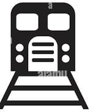

Leonia is a borough in Bergen County, New Jersey, United States. As of the 2010 United States Census, the borough's population was 8,937,reflecting an increase of 23 (+0.3%) from the 8,914 counted in the 2000 Census, which had in turn increased by 549 (+6.6%) from the 8,365 counted in the 1990 Census.
It is a suburb of New York City located near the western approach to the George Washington Bridge.
Leonia was formed as the result of a referendum passed on December 5, 1894, from portions of Ridgefield Township.
The borough was formed during the "boroughitis" phenomenon then sweeping through Bergen County, in which 26 boroughs were formed in the county in 1894 alone.[23] Portions of Leonia were taken on February 19, 1895, to form the Township of Teaneck.[22][24]
New Jersey Monthly magazine ranked Leonia as its 31st best place to live in its 2008 rankings of the "Best Places To Live" in New Jersey.
How to reach:
By Air
The nearest airport is in hyderabad

By Train
The nearest railways is in hyderabad
By Road
leonia resort, the most famous tourist destination in Hyderabad, can be used as a landmark. A bus,cab,local rickshaw can also be taken to reach the capital.